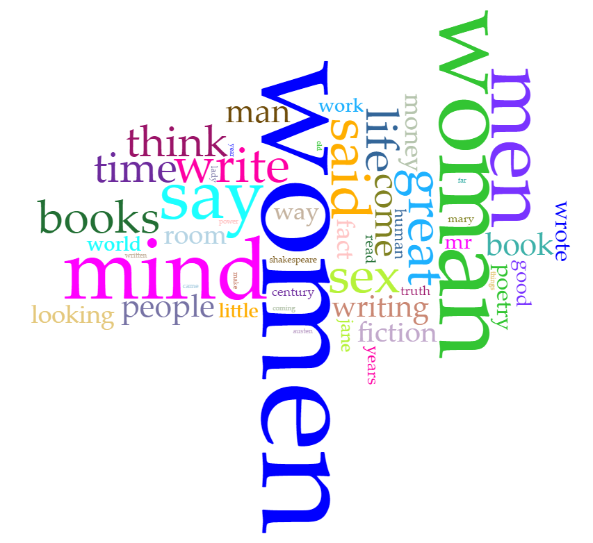

For this project, I decide to work on Virginia Woolf’s A Room of One’s Own. As we know, Woolf was one of the feminists of the 20th century who tried to change how societies treated and dealt with females.
Since she was a feminist and her work, A Room of One’s Own, has been seen and interpreted as feminist, as critics have mentioned, it may not be surprising if we, the readers of her work, realize that she focused more on females than on males and used more words that had to do with females than that that had to do with males. So, what I tend to do first is that even though A Room of One’s Own is divided into six sections, parts, or chapters, I decide to upload the text, the six parts, as one text and see how Woolf deal with her gender terms. Here is what I got:

Everything, particularly with the most frequent words, seems normal so far. In other words, it seems that it is not surprising that the words ‘women’ and ‘woman’ were used more than the word ‘men’ since the fight in such work was supposed to be a fight led by a feminist toward anti-feminist men. However, the word ‘mind,’ as the third most frequent word, catches my attention. In other words, why is it more frequent than the word ‘men’? This representation, using ‘mind’ more than ‘men’ in a feminist work, leads me to think whether or not Virginia Woolf used such a word for a purpose, such as to reflect the notion of mental control or the lack of consciousness that led females to be oppressed and to be treated as inferior and subordinate. To try to find an answer, I decide to upload each part of the text as a separate document in order to compare such words (women, woman, mind, and men) and see in which part of the text each word had an increase and decrease in its use. Such close reading and comparison can lead me to figure out the reason that the word ‘mind’ was used and became one of the most frequent words in such a feminist work. Even though the comparison and investigation will shed light on some parts of the text, the main focus is going to be on the last part through which a conclusion may be drawn. It should be noted that the reason I upload the parts separately is that it will help me to know the relative frequency of each word and how often it was exactly used or mentioned in each part (this was somehow difficult to know that when I uploaded the whole text as one document), and that will also lead me to draw a clear conclusion or pattern.
Starting with the most frequent word ‘women,’ the plural women’s relative frequency, as shown below, is 0.007797 in the 2nd part of the text. Examining the last part of the text (the 6th part), it is obvious that its relative frequency declines to be 0.004440.
The singular ‘woman,’ has 0.000742 as a relative frequency at the end of the 2nd part. The relative frequency of the word reaches 0.005899 in the 3rd part of the text. Comparing the 3rd part to the last, or the 6th, one, we can clearly see that the relative frequency of the word declines, and it becomes 0.004154 in the last part of the text.
So, comparing the uses of the words ‘women’ and ‘woman’ leads me to know that the total uses of both words are 303 times in the whole text, as the raw frequency shows. As for their total relative frequencies in the last part of the text, such words represents 0.008594, based on their relative frequencies.
Moving to the 3rd word, mind, the relative frequencies show that the word represents 0.001578 of the first part of the text. However, it, in the last part of the text, reaches 0.006016. This frequency is close to the total relative frequency of the two words, women and woman, which is 0.008594, as shown above. If I compare the total use, or the relative frequency, of the word ‘mind’ to the total relative frequency of each word of the two words, women and woman, I can notice that the word ‘mind’ is used more than them separately. This can show and reflect the importance of the word for the message Virginia Woolf wanted to deliver (I will discuss this in the conclusion).
As for the word ‘men,’ its relative frequency is 0.004270 in the 2nd part. However, it, like the other words, has some rises and drops. In the last part of the text, the relative frequency of the word ‘men’ declines to be 0.002005, which makes it the least frequent word among the words I have been examining, both in the whole text and in the last part of the text. It should be noted that Virginia Woolf, through this statistic, seems to ignore mentioning men in her last part of the work in order to server her purpose of writing the text.
After analyzing and showing how often the most frequent words are used in the whole text as well as in some parts of it, it is time to show the conclusion I have reached. What I think here is that Virginia Woolf seems to have a tendency to reduce using the word ‘men’ when she comes to the end of her text until it, the word ‘men,’ becomes the least used word among the list, i.e. women, woman, mind, and men. On the other hand, the word ‘mind,’ as the relative frequencies of the last part of the text show, is used more than any other words I examine in this project. When I consider the relationship between consciousness, or awareness, and women’s rights, I may be led to start thinking that the word ‘mind’ is stressed and used in the last part, which readers usually treat as a conclusion, for a purpose. In other words, Woolf tended to raise the consciousness of her female and male readers as well as the leaders and intellectuals of her society to be aware of the importance and necessity of women’s liberty and how women have been unfairly and unjustly treated, and that is obvious in the words’ relative frequencies as well as in some of the examined and investigated statements in which the word ‘mind’ was used, as shown below.